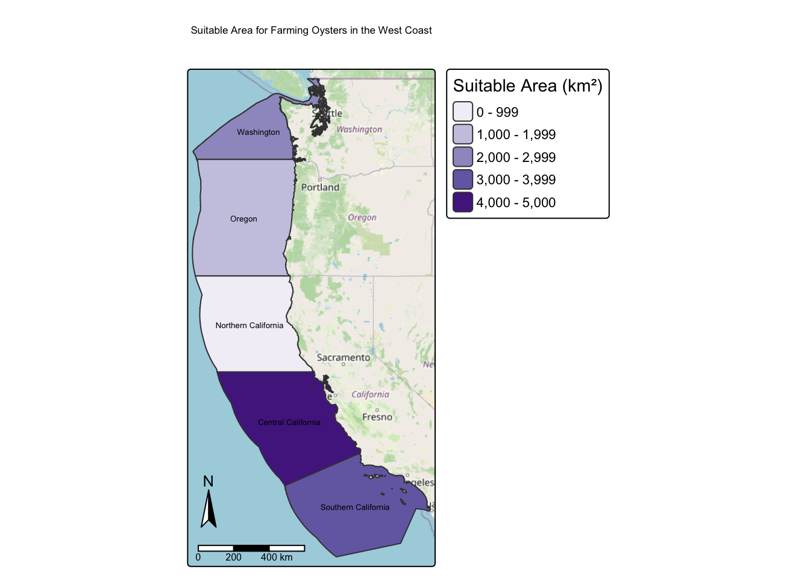

Code
# Load in libraries
suppressPackageStartupMessages({
library(terra)
library(sf)
library(tmap)
library(dplyr)
library(kableExtra)})December 6, 2025
This project aims to answer the question: Which Exclusive Economic Zones (EEZs) are best suited for farming a specific marine organism?
Unfortunately, the days of the ocean’s natural productivity providing for the planet are over. Wild fish have been exploited for generations. Given that over fishing of our oceans and other natural resources is continuously increasing year over year, humans need alternate sources for seafood to feed the planet’s ever-growing population. This planets human population is projected to be 10 billion by 2050, which will increase the demand for animal protein by 52 percent(Global Seafood Alliance, 2019). To fulfill this ever growing need for seafood we need to increase the amount of aquaculture farms. This creates a critical need to identify which Exclusive Economic Zones (EEZs) are best suited for farming marine organisms.
To address this issue, I developed a function that identifies which EEZs along the U.S. West Coast have the most potential for developing marine aquaculture for a specific marine species with map. The only arguments needed for this function are minimum and maximum sea surface temperature, minimum and maximum depth, and the name of the species of interest. With this function we can determine where aquaculture can be developed most effectively, helping to supplement wild fisheries and support long term global food security.
The analysis for this project is done as follows:
Ocean depth, EEZ boundaries, and SST data from 2008–2012 are loaded in
They are then projected to the same CRS
Mean SST is calculated and converted from Kelvin to Celsius
Using the organisms preferred SST and depth areas are classified into suitable and unsuitable ranges
Cells with in the EEZ polygons meeting both the organisms SST and depth requirements are selected
The amount of suitable area is then totaled for each EEZ
The results are plotted on a map
To start all the necessary libraries for this project were loaded in. The suppressPackageStartupMessages() function was used to suppress the long messages outputted by each library. All necessary data was then loaded in their coordinate reference system were matched to the CRS of economic_zones (WGS 84 (EPSG:4326)).
# Read in data
ocean_depth <- rast(here::here("posts", "2025-12-06-Aquaculture-Analysis", "data", "depth.tif"))
economic_zones <- st_read(here::here("posts","2025-12-06-Aquaculture-Analysis", "data", "wc_regions_clean.shp"), quiet = TRUE)
temp_2008 <- rast(here::here("posts", "2025-12-06-Aquaculture-Analysis", "data", "average_annual_sst_2008.tif"))
temp_2009 <- rast(here::here("posts", "2025-12-06-Aquaculture-Analysis", "data", "average_annual_sst_2009.tif"))
temp_2010 <- rast(here::here("posts", "2025-12-06-Aquaculture-Analysis", "data", "average_annual_sst_2010.tif"))
temp_2011 <- rast(here::here("posts", "2025-12-06-Aquaculture-Analysis", "data", "average_annual_sst_2011.tif"))
temp_2012 <- rast(here::here("posts", "2025-12-06-Aquaculture-Analysis", "data", "average_annual_sst_2012.tif"))Warning: ❗ CRSs don't match!# Match all CRSs to economic_zones CRS
ocean_depth <- project(ocean_depth, economic_zones)
temp_2008 <- project(temp_2008, economic_zones)
temp_2009 <- project(temp_2009, economic_zones)
temp_2010 <- project(temp_2010, economic_zones)
temp_2011 <- project(temp_2011, economic_zones)
temp_2012 <- project(temp_2012, economic_zones)
# Put all data into a list to check CRS
all_crs <- list(temp_2008, temp_2009, temp_2010, temp_2011, temp_2012, ocean_depth, economic_zones)
# Check if CRSs match
if (all(sapply(all_crs, crs) == crs(economic_zones))) {
message("🟢 CRSs match")
} else {
warning("❗ CRSs don't match!")
}🟢 CRSs matchThe SST and depth data then had to be processed so it can be combined. To do so the data’s differences in resolution, extent, and position had to be resolved. First, a single raster of mean ocean temperature(°K) from 2008-2012 was created and was then converted to Celsius. The crop() function was on ocean_depth to match the extent of mean_sst_c. The difference in resolution was then resolved using the nearest neighbor approach with the resample() function on ocean_depth_cropped to match the resolution of mean_sst_c. The rasters were then stacked.
# Stack rasters to find the mean SST from 2008-2012
temp_stack <- c(temp_2008, temp_2009, temp_2010, temp_2011, temp_2012)
# Calculate mean of stacked raster
mean_sst <- mean(temp_stack)
# Convert mean_sst from units to Celsius from Kelvin
mean_sst_c <- mean_sst - 273.15
# Crop ocean_depth raster to match the extent of mean_sst_c
ocean_depth_cropped <- crop(ocean_depth, mean_sst_c)
# Resample ocean_depth_cropped to match the resolution of mean_sst_c
ocean_depth_resampled <- resample(ocean_depth_cropped, mean_sst_c, method = "near")
# Check that the ocean_depth_resampled and mean_sst_c resolution, extent, and CRS match
crs(ocean_depth_resampled) == crs(mean_sst_c)[1] TRUE[1] TRUE[1] TRUE TRUEThe suitable locations in terms of both SST and depth for marine aquaculture were then located. This was done by reclassifying mean_sst_c and ocean_depth_resampled. The status of the areas was determined by the thresholds below.
Research has shown that Oysters need the following conditions for optimal growth:
Sea surface temperature: 11-30°C
Depth: 0-70 meters below sea level
# Reclasify mean_sst_c and ocean_depth_resampled into locations that are suitable for oysters
# Make the suitible range from 11-30°C
mean_sst_suitable <- classify(mean_sst_c, rbind(c(-Inf, 11, 0), # below 11°C = 0
c(11, 30, 1), # suitable (11°C-30°C) = 1
c(30, Inf, 0))) # above 30°C = 0
# Make the suitible range from -70 to 0 meters below sea level
ocean_depth_suitable <- classify(ocean_depth_resampled, rbind(c(-Inf, -70, 0), # below -70m = 0
c(-70, 0, 1), # suitable (-70m-0m) = 1
c(0, Inf, 0))) # above 0m = 0The total suitable area within each EEZ was then determined in order to rank zones by priority. This was done by multiplying the two layers together to find the suitable cells in both layers and making a out of economic_zones to only keep the areas inside the economic_zones polygon. The area of grid cells in km was then found. cell_areas and economic_zones_mask were them multiplied together to get the suitable cells area. To get total potential aquaculture area per EEZ the suitable area inside each EEZ polygon was added up using the zonal() function.
# Find suitable cells in both layers
suitable_cells <- mean_sst_suitable * ocean_depth_suitable
# Only keep areas inside the economic_zones polygon
economic_zones_mask <- mask(suitable_cells, vect(economic_zones)) # Convert economic_zones to a vector
# Find area of grid cells
cell_areas <- cellSize(economic_zones_mask, unit = "km")
# Multiply economic_zones_mask by cell_areas to get the suitable cells area
suitable_area <- economic_zones_mask * cell_areas
# # Add up the suitable area inside each EEZ polygon
potential_aquaculture_area <- zonal(suitable_area, vect(economic_zones), fun = "sum", na.rm = TRUE)To create a map the potential_aquaculture_area data was added to economic_zones data. A map of EEZ regions colored by amount of suitable area for farming oysters was then created. A table was then made using the kable() function to display the potential marine aquaculture area(km²) for each EEZ.
# Replaces spaces " " with line breaks "\n" so region names fit in polygons
economic_zones$rgn_label <- gsub(" ", "\n", economic_zones$rgn)
# Add the potential_aquaculture_area data to economic_zones to plot it
economic_zones$potential_aquaculture_area <- potential_aquaculture_area$mean
# Create a map of the economic_zones regions colored by amount of suitable area
tm_shape(economic_zones) +
tm_polygons(
fill = "potential_aquaculture_area",
fill.scale = tm_scale(values = "brewer.purples"),
fill.legend = tm_legend(title = "Suitable Area (km²)")
) +
tm_text("rgn_label", size = 0.55, col = "black") + # add region names
tm_title("Suitable Area for Farming Oysters in the West Coast") +
tm_basemap("OpenStreetMap") + # add basemap
tm_scalebar(position = c(0.01, 0.06)) +
tm_compass(position = c(0.01, 0.2)) +
tm_layout(legend.outside = TRUE)
# Display the potential_aquaculture_area in each EEZ as a kable
economic_zones %>%
select(rgn, potential_aquaculture_area) %>%
st_drop_geometry() %>% # remove geometry column
rename(
Region = rgn,
`Potential Aquaculture Area (km²)` = potential_aquaculture_area
) %>%
kable(
caption = "Potential Marine Aquaculture Area by EEZ (km²)",
digits = 2
) %>%
kable_styling(
bootstrap_options = c("striped", "hover", "condensed"),
full_width = FALSE
)| Region | Potential Aquaculture Area (km²) |
|---|---|
| Oregon | 1074.26 |
| Northern California | 178.02 |
| Central California | 4069.57 |
| Southern California | 3508.19 |
| Washington | 2378.28 |
The table and map above display the potential aquaculture area in each EEZ for oysters on the west coast. The EEZ with the most potential aquaculture area is the Central Coast. This EEZ has 4,069.57km² of potential aquaculture area. The area with the least amount of potential aquaculture area for oysters is Northern California. This EEZ only has 4,069.57km² of potential aquaculture area for oysters. Oysters are not well suited for this areas’ ocean depth and sea surface temperature
The workflow above for oysters was used to create a function called suitable_eez() that shows you which Exclusive Economic Zones (EEZs) along the U.S. West Coast have the most potential for developing marine aquaculture for a specific marine species with map. There are 5 arguments to this function: min_depth, max_depth, min_sst, max_sst, and species_name.
# Create a function that shows each EEZ's potential for developing marine aquaculture for a given species
suitable_eez <- function(min_depth, max_depth, min_sst, max_sst, species_name) {
library(terra)
library(sf)
library(tmap)
library(dplyr)
library(kableExtra)
# Read in data
ocean_depth <- rast(here::here("posts", "2025-12-06-Aquaculture-Analysis", "data", "depth.tif"))
economic_zones <- st_read(here::here("posts","2025-12-06-Aquaculture-Analysis", "data", "wc_regions_clean.shp"), quiet = TRUE)
temp_2008 <- rast(here::here("posts", "2025-12-06-Aquaculture-Analysis", "data", "average_annual_sst_2008.tif"))
temp_2009 <- rast(here::here("posts", "2025-12-06-Aquaculture-Analysis", "data", "average_annual_sst_2009.tif"))
temp_2010 <- rast(here::here("posts", "2025-12-06-Aquaculture-Analysis", "data", "average_annual_sst_2010.tif"))
temp_2011 <- rast(here::here("posts", "2025-12-06-Aquaculture-Analysis", "data", "average_annual_sst_2011.tif"))
temp_2012 <- rast(here::here("posts", "2025-12-06-Aquaculture-Analysis", "data", "average_annual_sst_2012.tif"))
# Match all CRSs to economic_zones CRS
ocean_depth <- project(ocean_depth, economic_zones)
temp_2008 <- project(temp_2008, economic_zones)
temp_2009 <- project(temp_2009, economic_zones)
temp_2010 <- project(temp_2010, economic_zones)
temp_2011 <- project(temp_2011, economic_zones)
temp_2012 <- project(temp_2012, economic_zones)
# Put all data into a list to check CRS
all_crs <- list(temp_2008, temp_2009, temp_2010, temp_2011, temp_2012, ocean_depth, economic_zones)
# Check if CRSs match
if (all(sapply(all_crs, crs) == crs(economic_zones))) {
message("🟢 CRSs match")
} else {
warning("❗ CRSs don't match!")
}
# Stack rasters to find the mean SST from 2008-2012
temp_stack <- c(temp_2008, temp_2009, temp_2010, temp_2011, temp_2012)
# Calculate mean of stacked raster
mean_sst <- mean(temp_stack)
# Convert mean_sst from units to Celsius from Kelvin
mean_sst_c <- mean_sst - 273.15
# Crop ocean_depth raster to match the extent of mean_sst_c
ocean_depth_cropped <- crop(ocean_depth, mean_sst_c)
# Stack the rasters
depth_sst_stack <- c(ocean_depth_resampled, mean_sst_c)
# Make the suitible range from 11-30°C
mean_sst_suitable <- classify(mean_sst_c, rbind(c(-Inf, min_sst, 0), # below 11°C = 0
c(min_sst, max_sst, 1), # suitable (11-30) = 1
c(max_sst, Inf, 0))) # above 30°C = 0
# Make the suitible range from -70 to 0 meters below sea level
ocean_depth_suitable <- classify(ocean_depth_resampled, rbind(c(-Inf, min_depth, 0), # below -70m = 0
c(min_depth, max_depth, 1), # suitable (-70-0) = 1
c(max_depth, Inf, 0))) # above 0 = 0
# Find sutible cells in both layers
suitable_cells <- mean_sst_suitable * ocean_depth_suitable
# Only keep areas inside the economic_zones polygon
economic_zones_mask <- mask(suitable_cells, vect(economic_zones)) # Convert economic_zones to a vector
# Find area of grid cells
cell_areas <- cellSize(economic_zones_mask, unit = "km")
# Multiply economic_zones_mask by cell_areas to get the suitable cells area
suitable_area <- economic_zones_mask * cell_areas
# Add up the suitable area inside each EEZ polygon
potential_aquaculture_area <- zonal(suitable_area, vect(economic_zones), fun = "sum", na.rm = TRUE)
# Replaces spaces " " with line breaks "\n" so region names fit in polygons
economic_zones$rgn_label <- gsub(" ", "\n", economic_zones$rgn)
# Add the potential_aquaculture_area data to economic_zones to plot it
economic_zones$potential_aquaculture_area <- potential_aquaculture_area$mean
# Create a map of the economic_zones regions colored by amount of suitable area
eez_plot <- tm_shape(economic_zones) +
tm_polygons(
fill = "potential_aquaculture_area",
fill.scale = tm_scale(values = "brewer.purples"),
fill.legend = tm_legend(title = "Suitable Area (km²)")
) +
tm_text("rgn_label", size = 0.55, col = "black") + # add region names
tm_title(paste("Suitable Area for Farming", species_name, "in the West Coast")) +
tm_basemap("OpenStreetMap") + # add basemap
tm_scalebar(position = c(0.01, 0.06)) +
tm_compass(position = c(0.01, 0.2)) +
tm_layout(legend.outside = TRUE)
return(eez_plot)
}The code below is a demonstration of how the function works:
SeaLifeBase is a good website to use to find information on species depth and temperature requirements.
Research has shown that Red abalone need need the following conditions for optimal growth:
Sea surface temperature: 8°C - 18°C
Depth: 0 - 24 m meters below sea level
After running the analysis it was determined that the EEZ with the most potential aquaculture area is Washington and the area with the least amount of potential aquaculture area for Red abalone is Northern California. Red abalone are not well suited for this areas’ ocean depth and sea surface temperature.
Though this project shows that Washington has the greatest suitable area for farming Red Abalone and that Central California offers the most suitable aquaculture area for oysters, there are a few important caveats to consider in this analysis. The SST data only includes measurements from 2008–2012. The SST has likely changed a bit due to climate change. This analysis only uses sea surface temperature, so it will have trouble finding suitable area for deep sea organism. There are also more variables that should be added to more accurately estimate potential aquaculture area for a given species. In the future more variables should be added and more recent SST data should be complied to gain more accurate results.
(NOAA Coral Reef Watch 2018) (GEBCO Compilation Group 2025) (Flanders Marine Institute (VLIZ) 2025) (Palomares and Pauly 2025) (Global Seafood Alliance 2019)
@online{martinez2025,
author = {Martinez, Austin},
title = {Identifying {Suitible} {Aquaculture} {Area}},
date = {2025-12-06},
url = {https://github.com/austinmartinez12/marine-aquaculture-suitability-mapping},
langid = {en}
}